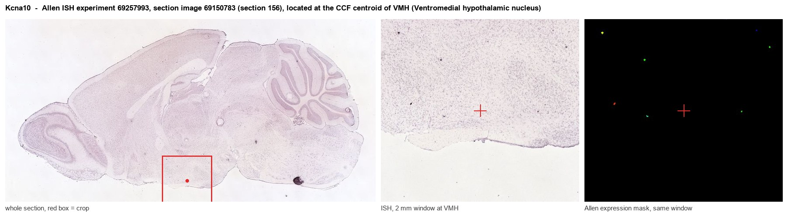
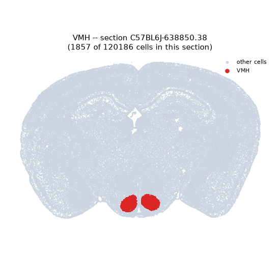
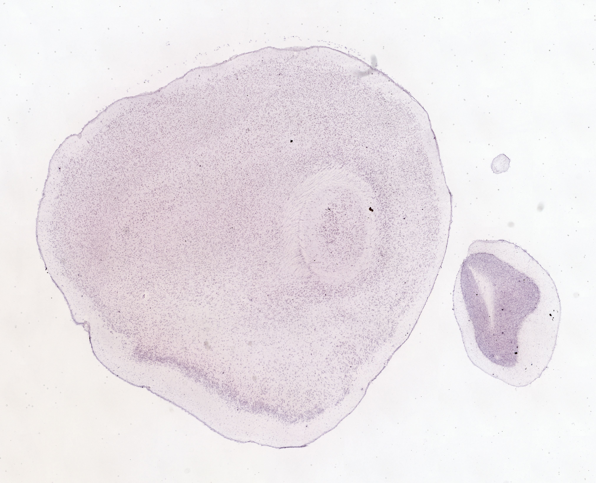
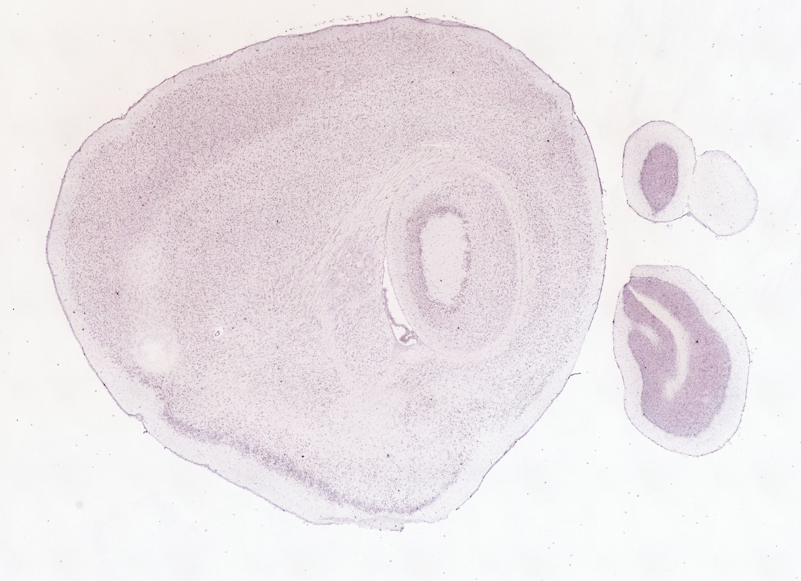
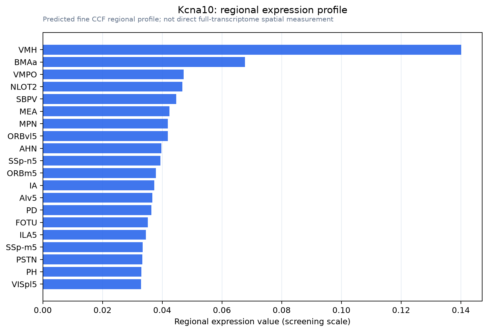

Kcna10
Potassium voltage-gated channel subfamily A member 10 (Voltage-gated potassium channel subunit Kv1.8)
Spatial tier: STRICT_EXCLUSIVE · Class: ION_CHANNEL · Top region: VMH (Ventromedial hypothalamic nucleus) · Positive regions: 4/554
Function in VMH: evidence, prediction, innovation
- Gene function
- Kcna10 encodes Kv1.8, a Shaker-family voltage-gated potassium subunit forming delayed-rectifier-like channels that repolarise the membrane after depolarisation. It is unusual among Kv1 channels in being cyclic-nucleotide-modulated and very restricted, best documented in inner-ear hair cells, kidney and vascular tissue.
- Region function
- The ventromedial hypothalamic nucleus, especially its dorsomedial SF-1 (Nr5a1) population, drives defensive and antipredator responses, contributes to aggression, and participates in glucose sensing and energy expenditure.
- Published in this region
- none No region-specific literature found. The targeted Kcna10 lacZ reporter mouse showed expression essentially confined to vestibular and cochlear hair cells, with homozygotes showing vestibular dysfunction and only mild hearing loss (Lee et al. 2013), so a VMH prediction should first be checked against probe cross-reactivity with other Kcna genes.
- Predicted function
- Prediction: if Kv1.8 is genuinely expressed in VMH neurons it would be a delayed-rectifier brake setting spike width and maximum firing rate of SF-1 neurons, whose graded firing scales defensive intensity. Loss would broaden spikes and raise excitability, predicting exaggerated freezing and flight to predator cues and altered glucose counter-regulation; cyclic-nucleotide sensitivity would make the brake neuromodulator-tunable.
- Innovation
- ★★★☆☆ 3/5 Kv1.8 has never been examined in hypothalamus, but published expression points to inner ear only, so validation comes first.
- Tools
- B6-Kcna10(TM45) null/lacZ reporter mouse (Lee et al. 2013); Kv1 blockers 4-aminopyridine and dendrotoxins lack Kv1.8 selectivity; VMH access via Nr5a1(SF1)-Cre (JAX 012462).
- References
Direct evidence located at the region

Allen ISH experiment 69257993, section image 69150783 (section 156): the section that contains the CCF centroid of Ventromedial hypothalamic nucleus according to the Allen image-to-atlas alignment (reference_to_image), with a 2 mm window around that point. Left: whole section, red box = window. Middle: ISH signal. Right: Allen's expression-mask view of the same window. open this image in the Allen viewer
Direct spatial evidence



Regional expression figure

Predicted WMB × fine-CCF profile; not direct full-transcriptome spatial measurement.
Spatial profile
Evidence and specificity
- Evidence status
- PREDICTED_FINE
- Direct sources
- None; predicted localization only
- Exclusive threshold
- 12 positive regions out of 554
- Spatial specificity
- 0.307
- Top-region fraction
- 0.118
- Filter status
- PASS
Interpretation limits
- Cell-type-to-region projection is imputed expression, not direct spatial measurement.
- Adult reference atlases do not establish stability across age, sex, strain, state, or disease.
- Transcript abundance does not guarantee protein abundance or genetic-tool performance.